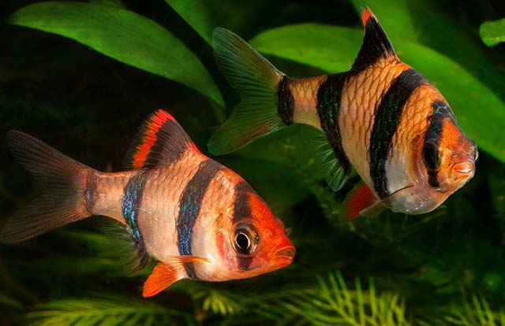
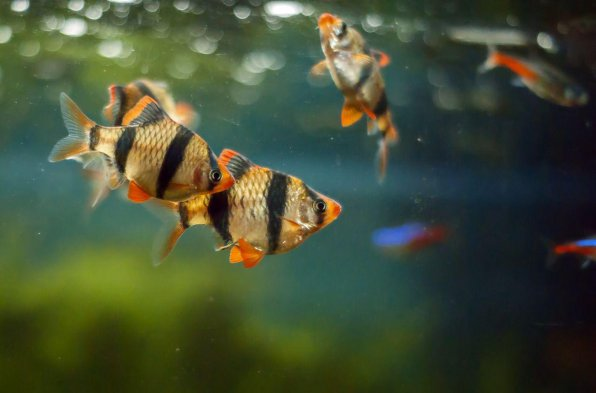

Барбус
Барбуси, або усачи [1] (лат. Barbus) - рід лучеперих риб сімейства коропових.
Живуть барбуси в водоймах Південної і Південно-Східної Азії, Африки, Європи. Тіло витягнутої форми, хвостовий плавник дволопатеве. Самки виглядають більшими через повну черева. Під час нересту забарвлення самця стає яскравішим.
Барбусы очень популярные аквариумные обитатели. Порядка 15 видов барбусов широко распространены в аквариумистике. Эти рыбы миролюбивы и очень активны, но их не следует содержать с рыбами, имеющими нитевидные плавники. Необходимы заросли плавающих растений. Аквариум должен быть просторным. Барбусы питаются мотылём, трубочниками. Отдельным видам нужна растительная пища. Барбусы тщательно подбирают остатки корма со дна. Рекомендуемые условия: температура 20—26 °С (в нерестовом аквариуме на 2 градуса выше), жёсткость 4—10`, кислотность 6,5—7,5